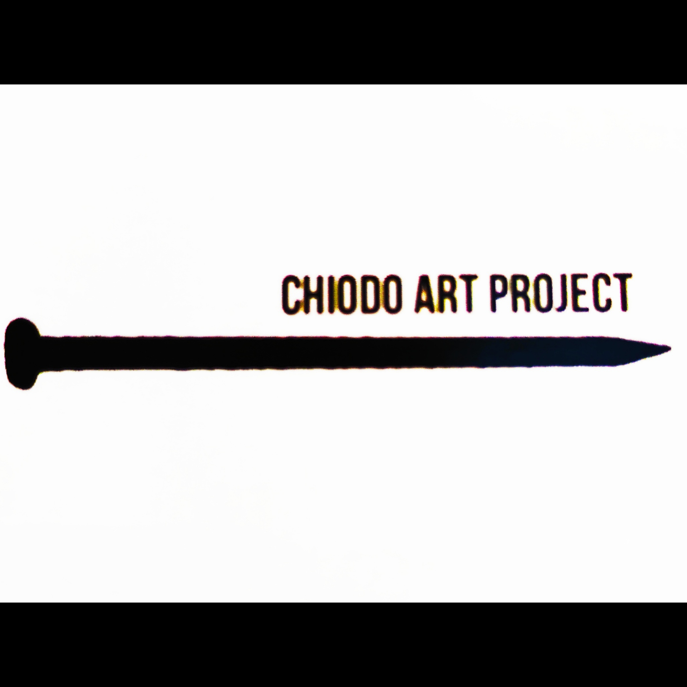

Contactos: Pueden contactarme a través de
o también por correo electrónico:
Artesano italiano afincado en Granada, especialista en el fascinante arte del vidrio Tiffany y las vidrieras emplomadas.
Más Info
¡Descubre la magia de mis creaciones! A continación podrás explorar mi portafolio.
Obra finalista en el concurso "Milano Vetro U-35" 2022.
Expuesta durante tres meses, en la "sala de la Balla".
En el museo del Castillo Sforza de Milan.
Lámparas artisticas de vidrio de colores con técnica Tiffany
Pájaros en vidrio de colores hecho a mano con técnica Tiffany